Annotating BhopalMLS point clouds in CloudCompare
The step-by-step procedure used to label the BhopalMLS survey paths: open a segment, inspect it with the 360° photos, carve it into classes with the segment tool, split classes into instances, name and export every instance, then pass the quality checks. Written for annotators, and for anyone who wants to extend the dataset or label their own scans the same way.
NXXZZYYYY
Deliverable one CSV per instance
- Before you start
- The taxonomy and its codes
- The workflow at a glance
- Step 1 · Open a segment
- Step 2 · Set up the view
- Step 3 · The segment tool
- Step 4 · Carve the segment into classes
- Step 5 · Split classes into instances
- Step 6 · Name and export
- Step 7 · Quality checks
- Frequently asked questions
- Appendix · class codes, shortcuts, folder layout
1Before you start
BhopalMLS was scanned with a handheld GeoSLAM ZEB Horizon along eight survey paths through the old market district of Bhopal. Each path is split into segments of a few hundred metres. One segment is one work unit: you receive it, label it completely, and return it.
What you receive
- The segment point cloud (LAS, or PLY / CSV), with XYZ in UTM zone 43N, LiDAR intensity, GPS time, and RGB for the points that fall inside a registered photo (about 40% of points; the rest carry RGB 0,0,0).
- The 360° photo crops taken along the same walk. Use them whenever the geometry alone does not tell you what an object is.
- This guide and the class code table (appendix). Keep the table open while you work.
Software and hardware
- CloudCompare 2.11 or newer from danielgm.net/cc (Windows installer, macOS, Linux Flatpak or Snap). Everything here uses the standard tools; no plugin is required. The screenshots are from 2.11.3 on Linux; the dialogs and buttons are the same in 2.12 and 2.13.
- A segment has 5 to 15 million points. 16 GB RAM and a dedicated GPU make the segment tool fluid; 8 GB works if you keep only the cloud you are editing visible.
- A mouse with a wheel. The segment tool is painful on a trackpad.
Folder layout on disk
Create the output folders before you start, one per major class, with a sub-folder per subclass you actually use. The lab's merge script reads the class from the folder and the instance ID from the file name, so the layout is part of the deliverable.
Path_6/
└── Segment_03/
├── Segment_03_raw.las the segment as received (never edited)
├── Segment_03_project.bin your CloudCompare project, saved often
├── Building/
│ ├── Commercial/ 603020001.csv 603020002.csv ...
│ └── Residential/ 603010001.csv ...
├── Road/Road/ 604000001.csv
├── Vehicle/
│ ├── Car/ 608010001.csv ...
│ └── Mobike (Two-Wheeler)/ 608020001.csv ...
├── Human and Animal/Male/ 611010001.csv ...
├── Moving/Moving Humans/ 600040001.csv ...
└── Unlabeled/Unlabeled/ 600000001.csv
2The taxonomy and its codes
Every point ends up in exactly one of 68 classes: 62 static classes in 12 major groups, plus 6
classes for objects that moved while they were scanned. Each class has a four-digit code
XXZZ: XX is the major class (01 to 12) and ZZ the subclass within it.
ZZ = 00 is the general subclass of that major class, used when the finer type cannot be told.
Major class 00 holds everything outside the static taxonomy: unlabeled points, noise and the
six moving classes.
| XX | Major class | What goes in it | Subclasses (ZZ) |
|---|---|---|---|
| 01 | Ground | Walkable ground that is not the carriageway: footpaths, shop fronts, unpaved verges, steps. | 00 general · 01 Flat · 02 Gently sloping · 03 Steeply sloping (steps and stairs in front of shops; reported as Stairs in the paper) |
| 02 | Vegetation | Trees, shrubs, creepers, potted plants. | 00 general · 01 Low (< 1 m) · 02 Medium (1 to 3 m) · 03 High (> 3 m) |
| 03 | Building | Walls, facades, roofs, balconies, fixed signage painted on the wall. | 00 general · 01 Residential · 02 Commercial · 03 Industrial · 04 Special (temples, mosques, offices, hospitals) |
| 04 | Road | The carriageway surface vehicles drive on, including its drains and speed breakers. | 00 only |
| 05 | Wire | Overhead wires and cables between poles and buildings. | 00 only |
| 06 | Pole and Tower | Vertical supports: electric poles, street lights, mobile towers, flag and banner poles. | 00 general · 01 Electric pole · 02 Mobile tower · 03 Street light |
| 07 | Wire-Structure Connector | The hardware where wires meet structures: transformers, junction boxes, cross-arms, insulator clusters, wire bundles on a pole or wall. | 00 only |
| 08 | Vehicle | Every parked or standing vehicle, with its load. A rider sitting on a parked two-wheeler is labelled with the bike as a rider class. | 00 general · 01 Car · 02 Mobike (two-wheeler) · 03 Cycle · 04 Hand-cart · 05 Tuktuk (auto-rickshaw) · 06 Truck · 07 Rickshaw (cycle rickshaw) · 08 E-rickshaw · 09 Dynamic car · 10 Dynamic tuktuk · 11 Dynamic truck · 12 Rider on vehicle · 13 Mobike rider · 14 Cycle rider |
| 09 | Board | Free-standing or mounted boards: shop signboards, hoardings, banners on frames. | 00 general · 01 Sign board · 02 Advertisement board |
| 10 | Fencing | Boundary walls, gates, railings and fences that are not part of a building. | 00 general · 01 Masonry wall · 02 Wired boundary fencing · 03 Gate of boundary wall · 04 Road fencing |
| 11 | Human and Animal | People and animals that stood still during the scan. | 00 general · 01 Male · 02 Female · 03 Child · 04 Animal (general) · 05 Dog · 06 Cow |
| 12 | Road Side Object | Everything else that stands on or beside the road. | 00 general · 01 Barricade · 02 Shop shade (awnings, canopies) · 03 Road side furniture (benches, stalls, racks, displays) · 04 Statue · 05 Handpump · 06 Road side public structure · 07 Mannequin · 08 Dustbin · 09 Bus stand · 10 Overhead structure (gantries, water tanks) · 11 Road median |
| 00 | Outside the static taxonomy | Unlabeled, noise and moving objects. | 00 Unlabeled · 01 Noise points (below ground) · 02 High noise (floating in the air) · 03 Moving vehicle · 04 Moving humans · 05 Moving female · 06 Moving male · 07 Moving animal · 08 Mobike rider moving |
0302 Commercial. If you only know it is a building, label it 0300. A wrong subclass costs more than a general one: the general label is still correct at the 12-class level, a wrong subclass is wrong at every level.
00 (0003 Moving vehicle, 0004 Moving humans, 0008 Mobike rider moving, and so on), never to the static classes. A vehicle that is clearly recognisable but was in slow traffic can be labelled Dynamic car / tuktuk / truck (0809 to 0811).
0000 is only for points you cannot identify at all, or for an object that is not in the list. If you can recognise an object from a fragment (a trunk without a crown, a bike without a wheel) give it its class.
Bhopal-specific cases that are easy to get wrong, and the class they belong to:
| You see | Label | Not |
|---|---|---|
| An awning or canopy over a shop front | 1202 Shop shade | Building |
| A clothes mannequin outside a garment shop | 1207 Mannequin | Human |
| A vendor's hand cart (thela), with its goods | 0804 Hand-cart | Road side furniture |
| Goods displayed on racks or tables in front of a shop | 1203 Road side furniture | Building, Board |
| A board painted directly on a wall | 03xx Building (it is the wall) | Board |
| A board on its own frame or bracket, even if touching the wall | 09xx Board | Building |
| A bundle of wires, a transformer or a junction box on a pole | 0700 Wire-Structure Connector | Wire, Pole |
| Steps leading up to a shop | 0103 Steeply sloping ground | Building |
| A low boundary wall with a gate, not part of a house | 1001 Masonry wall and 1003 Gate | Building |
| A person sitting on a parked motorbike | 0813 Mobike rider (person and bike together) | Human + Vehicle |
| A streak of points along the road with no solid shape | 0003 Moving vehicle | Vehicle |
| Points floating in the air, or below the road surface | 0002 High noise · 0001 Noise points | Unlabeled |
3The workflow at a glance
NXXZZYYYY and save it as a CSV in its class folder.The order matters. Carving classes first and instances second is much faster than cutting objects one by one out of the full segment, because every cut you make on a class cloud only has to separate objects of the same kind.
4Step 1 · Open a segment
- Start CloudCompare and drag the segment file into the window, or use (Ctrl+O).
- In the file dialog that follows, keep the default field mapping and click Apply all. For a LAS file make sure Intensity and RGB are ticked. For a CSV, check that the columns are mapped to X, Y, Z, R, G, B and that intensity is read as a scalar field.
- Because the coordinates are UTM (values around 7 45 000 east and 25 73 000 north), CloudCompare offers to shift the cloud. Tick Preserve global shift on save and click Yes to All. The cloud is shown in local coordinates but every file you save gets the original coordinates back.
- Immediately save a project: select the cloud, (Ctrl+S), choose CloudCompare entities (*.bin), name it
Segment_NN_project.bin. There is no auto-save. Save the project every time you finish a class.
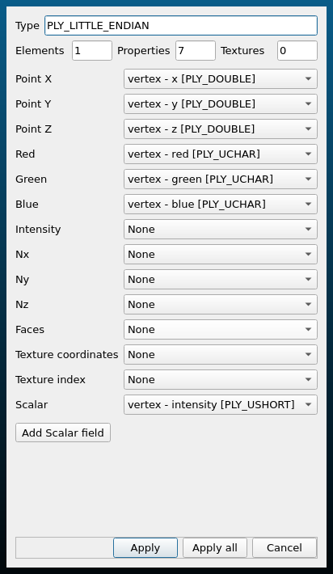
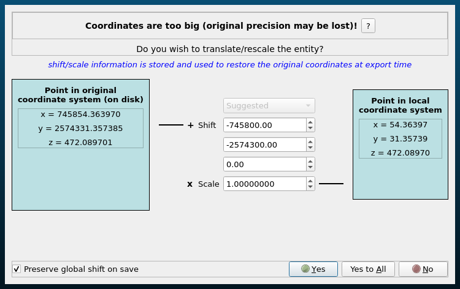
5Step 2 · Set up the view
You will switch between three ways of looking at the same points. Select the cloud in the DB Tree; the Properties panel below it controls the display.
- RGB (Properties › Colors › RGB): the photo colours. Only about 40% of points have them; the rest are black. Best for reading boards, shop fronts and vehicle types.
- Intensity (Properties › Colors › Scalar field, active field Intensity): the laser return strength. Every point has it. Road markings, metal, glass and foliage stand out. This is the view you will use most.
- EDL shading (, or the EDL icon on the right): adds depth shading so edges, steps and thin objects such as wires stand out from any viewpoint. Switch it off again with when it makes a dense cloud too dark.
Navigation: left-drag rotates, right-drag pans, the wheel zooms. The icons on the left of the window give the top, front, back, left and right views; the magnifier icon (Z) zooms onto the selected entity. F3 toggles perspective. Set Point size to 2 or 3 in the Properties panel so that sparse objects are easier to read, and for an intensity view choose the Grey colour scale under Color Scale and drag the upper end of the Display ranges down until the road and walls show contrast.
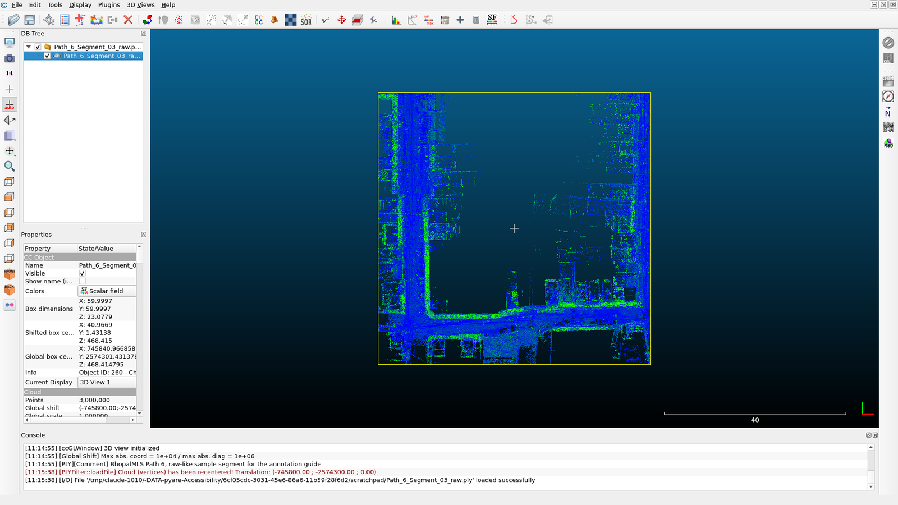
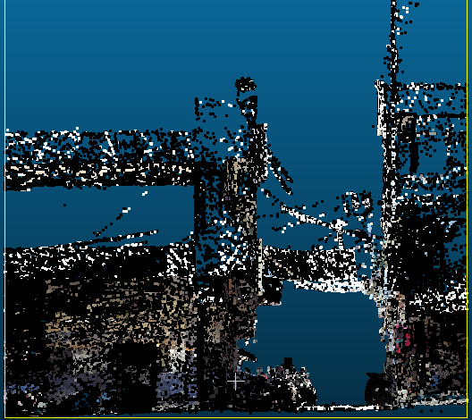
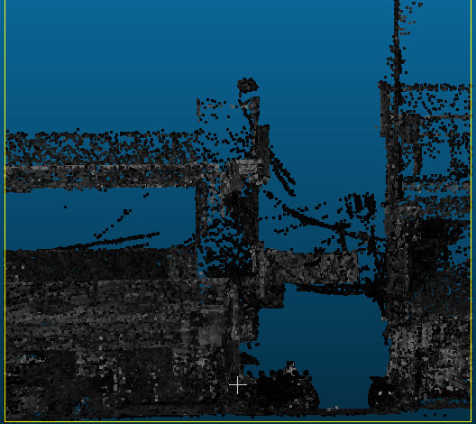
Using the 360° photos
The crops are named by their position along the path. Open the crop nearest to the object you are unsure about and compare: a smeared blob next to a shop is a hanging banner or a mannequin, a low block on the footpath is a hand cart or a bench. Decide from the photo, then label the points. When a photo and the geometry disagree (something moved between the photo and the scan), the geometry wins.
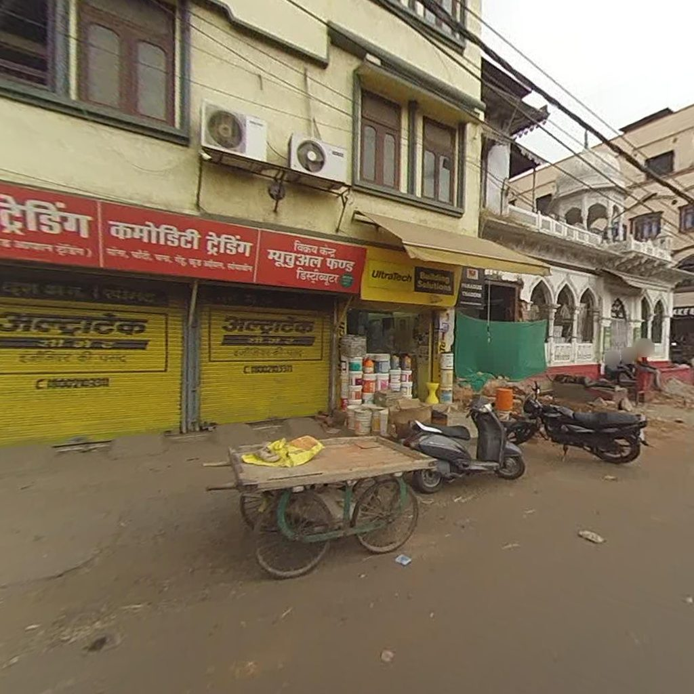
0804), two-wheelers (0802), boards (09xx), a shop shade (1202) and wires (0500) in one view. Faces and plates are blurred in the released imagery.6Step 3 · The segment tool
One tool does nearly all the work: (T, or the scissors icon in the top toolbar). It cuts the selected cloud in two with a polygon you draw on the screen.
- Select the cloud to cut in the DB Tree and press T. A small toolbar appears at the top right of the 3D view and the view stops rotating.
- Choose polygonal selection (default) or rectangular from the dropdown.
- Left-click to place the polygon's corners around the object. Right-click closes the polygon.
- Click Segment In (I) to keep only what is inside the polygon, or Segment Out (O) to remove what is inside. The hidden points are not deleted, only hidden.
- To look at the result from another side, press Space (Pause): the view rotates again, the tool stays open. Press Space to continue cutting. Refine from two or three viewpoints until only the object remains.
- Press Enter (the green tick) to confirm. The cloud is replaced by two clouds in the DB Tree:
name.segmented(what you kept) andname.remaining(everything else). Esc cancels without changing anything.
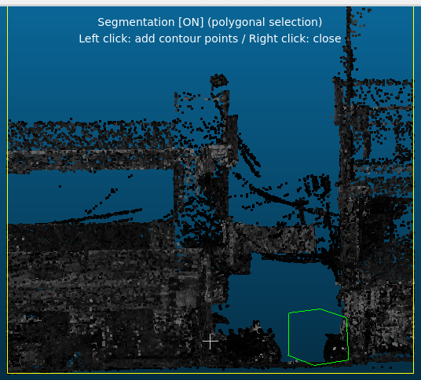
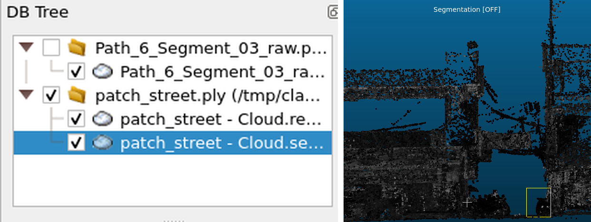
.segmented (the cart, 7,961 points, selected) and .remaining. Untick .remaining to see the cut alone.7Step 4 · Carve the segment into classes
The goal of this step is one cloud per class, named by its code, with nothing left over. Work from the
largest, simplest classes to the smallest. After every cut, rename .segmented to the class and
keep working on .remaining.
- Road (
0400). Top view, intensity colours. Trace the carriageway between the shop fronts. Include speed breakers and covered drains; exclude parked vehicles (they are cut later from the remaining cloud). - Ground (
01xx). What is left at street level: footpaths, shop thresholds, steps, bare earth. Cut steps as0103if they are a clear block of their own. - Building (
03xx). Side views. Cut facade by facade so that a later instance split is already done; one cloud per building is ideal. Shop shades, boards on brackets and goods on racks do not belong here. - Vegetation (
02xx). Trees and shrubs, with their trunks. Decide the height subclass from the side view. - Wire (
0500), Pole and Tower (06xx), Wire-Structure Connector (0700). Side views with EDL. Cut the pole from the ground up to its top; the wires leaving it are Wire; the transformer, cross-arm and cable bundle on it are the Connector. - Vehicle (
08xx), Human and Animal (11xx), Board (09xx), Fencing (10xx), Road Side Object (12xx). The small classes. Use the photos. - Moving (
0003to0008) and noise (0001,0002). Streaks, ghosts, floating points. - Whatever is still in the last
.remainingand cannot be identified becomes0000Unlabeled. The remaining cloud must then be empty.
Renaming a cloud
Select the cloud in the DB Tree and press F2, or edit the Name field at the top of the
Properties panel. Name class clouds XXZZ_Class, for example 0400_Road or
0302_Commercial. A right-click on the parent group offers Sort children by name, so the
codes keep the list in taxonomy order, and Add empty group, which gives you one folder per major
class to drag the clouds into.
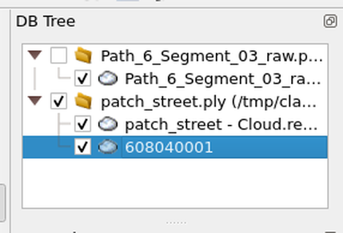
XXZZ_Class form so that the list sorts in taxonomy order.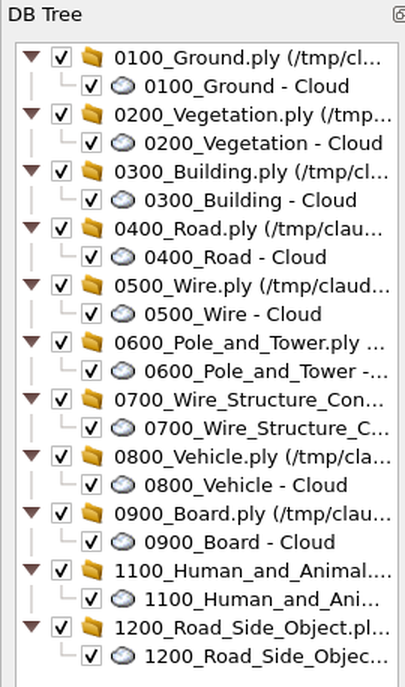
8Step 5 · Split classes into instances
Every object in a thing class gets its own cloud. Thing classes are Building, Pole and Tower, Wire-Structure Connector, Vehicle, Board, Fencing, Human and Animal and Road Side Object. Ground, Road, Vegetation and Wire are stuff classes in the benchmark, but they are still delivered as one cloud per connected piece (one road surface, one patch of ground, one tree, one wire run), which makes the quality check and the merge simpler.
Automatic first: connected components
- Select a class cloud and open .
- Raise the octree level until the grid step shown beside it is about 10 to 15 cm, the gap that separates two parked vehicles or two people (the level number itself depends on the size of the cloud). Set min. points per component to 100 so that noise does not become an instance. Tick random colors and click OK.
- CloudCompare creates one cloud per component in a new group named after the class cloud,
CC#0,CC#1, and so on, and hides the original. The console reports how many components were made. - Walk through the components. One object split into several components: select them all (Ctrl-click) and . Several objects in one component: select it, press T and cut them apart with polygons.
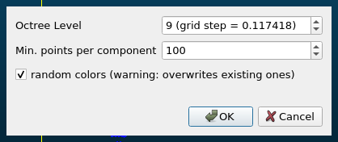
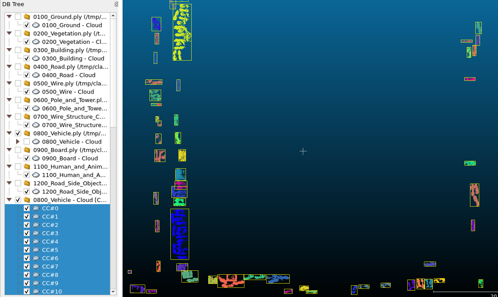
CC#n. Rows of two-wheelers parked wheel to wheel land in one component (the large blocks) and are cut apart with the segment tool; a single vehicle split in two is merged back.9Step 6 · Name and export
The instance ID
Every instance is named with a nine-digit ID that encodes where it is in the dataset:
N XX ZZ YYYY
│ │ │ └── running number of this object within the class, 0001, 0002, ...
│ │ └───── subclass (00 = general)
│ └──────── major class 01..12 (00 = unlabeled, noise, moving)
└────────── survey path 1..8
608020017 = path 6, Vehicle (08), Mobike (02), the 17th mobike
603000003 = path 6, Building (03), general (00), the 3rd building
600040001 = path 6, Moving humans (0004), the 1st
Keep YYYY unique within your segment for each class code. The lab renumbers across the
segments of a path when it merges them, so you do not need to know what other annotators used.
Export each instance as CSV
- Rename the instance cloud to its ID (F2). Instance clouds live under their class cloud in the DB Tree; the class cloud keeps its
XXZZ_Classname. - Select the instance and press Ctrl+S. Choose the file type ASCII cloud (*.txt *.asc *.csv ...), go to the class folder on disk (
Vehicle/Mobike (Two-Wheeler)/), type the ID with the extension,608020017.csv, and click Save. - In the Save ASCII file dialog set separator to comma, tick columns title, keep the order point, color, SF(s), normal, and click OK. The file then has one header line (
//X,Y,Z,R,G,B,intensity) and one point per line in the original UTM coordinates. The lab's merge script turns these into the release format (x,y,z,intensity,gps_time,label,global_id); you do not need to edit them. - Several instances of one class can be exported in one go: select them all and save; CloudCompare asks for a file name per cloud, pre-filled with the cloud name.
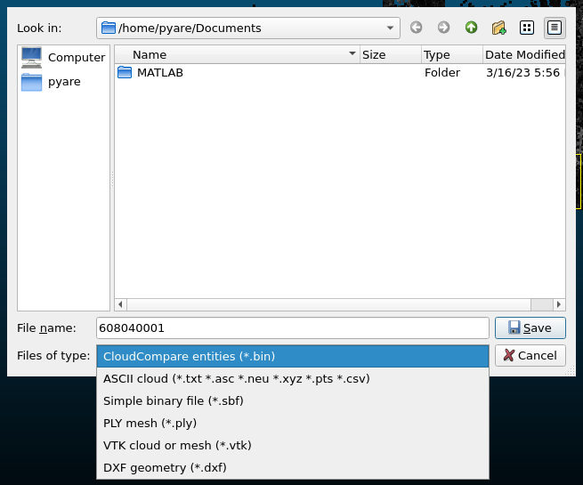
.csv as the name.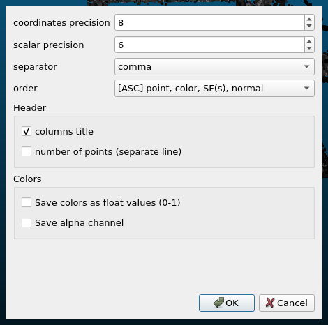
745123.4567,2573045.1234,500.12, not 123.4567,45.1234,.... If the shift was lost, reload the raw file and answer the global shift dialog again with Preserve global shift on save ticked.
10Step 7 · Quality checks
Before you hand in a segment
- The last
.remainingcloud is empty: every point is in exactly one instance file. - Show each class cloud alone and rotate it once: no points of another class inside.
- Every file name is nine digits with the right path number, class and subclass, and every file sits in the folder of its class.
- Each instance file has the header line, comma separators and UTM coordinates.
- The project
.binis saved and sits next to the raw file.
What the lab does with it
Every segment is labelled by two annotators independently. The lab merges each annotator's files back into a labelled copy of the segment and computes the point-level disagreement between the two. Disagreeing points are reviewed together with both annotators and corrected until the disagreement rate of the whole path is below 0.5%. A path that does not get there is relabelled by a third annotator. A reviewer then goes through every labelled path once more and settles the remaining cases by discussion. The classes where annotators disagree most are Ground against Road where unpaved ground grades into the carriageway, and Fencing against Building on boundary walls; take extra care at those boundaries.
11Frequently asked questions
- I can recognise the class but the object is incomplete, for example a crown without a trunk. Unlabeled?
- No. If you are confident about the class, label it. Unlabeled is only for points you cannot identify at all.
- I found an object that is not in the list.
- Label it
0000Unlabeled and note it in your hand-over message with the instance ID, so the lab can decide whether the list needs a class. - How do I decide low, medium and high vegetation?
- By height above the ground in the side view: shrubs and potted plants below 1 m are low, a banana-sized tree between 1 and 3 m is medium, anything taller (neem, mango, peepal) is high.
- Shop shade or building?
- If it is a separate sheet, frame or canopy fixed to the facade, it is a Shop shade. A concrete projection cast with the building (a chhajja or balcony) is Building.
- Male, female, child, or just Human?
- Use the photo. If the photo does not settle it, use
1100Human and Animal. These subclasses record what the annotator could see, nothing more. - My cloud opens in the wrong place, or exported files do not line up with the raw data.
- The global shift was not preserved. Reload the raw file and answer the global shift dialog with Preserve global shift on save ticked.
- CloudCompare becomes slow when I have many clouds visible.
- Untick everything you are not working on in the DB Tree. Only the visible clouds are drawn. Save the project first.
- Can I undo a cut?
- There is no undo. Merge
.segmentedand.remainingback () and cut again. The raw file is always there to reload.
12Appendix
A · Class codes (all 71 codes of the V13 class table)
The complete table used during annotation, including the general code of every major class. The last column is the running index of the V13 table; the released NPZ and HDF5 files carry their own contiguous 0 to 61 class index, listed in the dataset documentation, and the full NXXZZYYYY ID of every point.
| XX | ZZ | Class | V13 index |
|---|---|---|---|
| 00 | 00 | Unlabeled | 0 |
| 00 | 01 | Noise Points | 1 |
| 00 | 02 | High Noise Points | 2 |
| 00 | 03 | Moving Vehicle | 3 |
| 00 | 04 | Moving Humans | 4 |
| 00 | 05 | Moving Female | 5 |
| 00 | 06 | Moving Male | 6 |
| 00 | 07 | Moving Animal | 7 |
| 00 | 08 | Mobike Rider Moving | 8 |
| 01 | 00 | Ground | 9 |
| 01 | 01 | Flat Ground | 10 |
| 01 | 02 | Gently Sloping Ground | 11 |
| 01 | 03 | Steeply Sloping Ground | 12 |
| 02 | 00 | Vegetation | 13 |
| 02 | 01 | Low Vegetation | 14 |
| 02 | 02 | Medium Vegetation | 15 |
| 02 | 03 | High Vegetation | 16 |
| 03 | 00 | Building | 17 |
| 03 | 01 | Residential | 18 |
| 03 | 02 | Commercial | 19 |
| 03 | 03 | Industrial | 20 |
| 03 | 04 | Special | 21 |
| 04 | 00 | Road | 22 |
| 05 | 00 | Wire | 23 |
| 06 | 00 | Pole and Tower | 24 |
| 06 | 01 | Electric Pole | 25 |
| 06 | 02 | Mobile Tower | 26 |
| 06 | 03 | Street Light | 27 |
| 07 | 00 | Wire-Structure Connector | 28 |
| 08 | 00 | Vehicle | 29 |
| 08 | 01 | Car | 30 |
| 08 | 02 | Mobike (Two-Wheeler) | 31 |
| 08 | 03 | Cycle | 32 |
| 08 | 04 | Hand-Cart | 33 |
| 08 | 05 | Tuktuk (3 Wheeler) | 34 |
| 08 | 06 | Truck | 35 |
| 08 | 07 | Rickshaw | 36 |
| 08 | 08 | E-Rickshaw | 37 |
| 08 | 09 | Dynamic Car | 38 |
| 08 | 10 | Dynamic Tuktuk (3 Wheeler) | 39 |
| 08 | 11 | Dynamic Truck | 40 |
| 08 | 12 | Rider on Vehicle | 41 |
| 08 | 13 | Mobike Rider (2 Wheeler) | 42 |
| 08 | 14 | Cycle Rider | 43 |
| 09 | 00 | Board | 44 |
| 09 | 01 | Sign Board | 45 |
| 09 | 02 | Advt Board | 46 |
| 10 | 00 | Fencing | 47 |
| 10 | 01 | Masonry Wall | 48 |
| 10 | 02 | Wired Boundary Fencing | 49 |
| 10 | 03 | Gate of Boundary Wall | 50 |
| 10 | 04 | Road Fencing | 51 |
| 11 | 00 | Human and Animal | 52 |
| 11 | 01 | Male | 53 |
| 11 | 02 | Female | 54 |
| 11 | 03 | Child | 55 |
| 11 | 04 | Animal | 56 |
| 11 | 05 | Dog | 57 |
| 11 | 06 | Cow | 58 |
| 12 | 00 | Road Side Object | 59 |
| 12 | 01 | Barricade | 60 |
| 12 | 02 | Shop Shade | 61 |
| 12 | 03 | Road Side Furniture | 62 |
| 12 | 04 | Statue | 63 |
| 12 | 05 | Handpump | 64 |
| 12 | 06 | Road Side Public Structure | 65 |
| 12 | 07 | Mannequin | 66 |
| 12 | 08 | Dustbin | 67 |
| 12 | 09 | Bus Stand | 68 |
| 12 | 10 | Overhead Structure | 69 |
| 12 | 11 | Road Median | 70 |
B · CloudCompare shortcuts used here
| Action | Where | Key |
|---|---|---|
| Open a file | File › Open | Ctrl+O |
| Save the selected entities | File › Save | Ctrl+S |
| Segment tool | Edit › Segment | T |
| In the segment tool: pause / resume drawing | toolbar | Space |
| In the segment tool: keep inside / remove inside | toolbar | I / O |
| In the segment tool: confirm / cancel | toolbar | Enter / Esc |
| Rename the selected entity | DB Tree | F2 |
| Delete the selected entity | Edit › Delete | Del |
| Zoom onto the selected entity | left toolbar, magnifier | Z |
| Merge the selected clouds | Edit › Merge | |
| Connected components | Tools › Segmentation › Label Connected Components | |
| EDL shading on / off | Display › Shaders & Filters › EDL Shader / Remove Filter | |
| Toggle perspective | Display | F3 |
| Full-screen 3D view | Display › Full screen (3D view) | F11 |
C · Deliverable folder layout
One folder per major class, one sub-folder per subclass, one CSV per instance named by its ID, plus the untouched raw file and the project file. The folder names are the class names of the table above, exactly as written there.
D · About this guide
This guide describes the procedure of the BhopalMLS annotation, as summarised in Section 3.3 of the paper. The original work units were labelled with CloudCompare 2.11 and 2.12 and the lab's merge and check scripts; the class table is the V13 class mapping that the released data use. The screenshots show a real 60 m segment of Path 6 opened in CloudCompare 2.11.3.